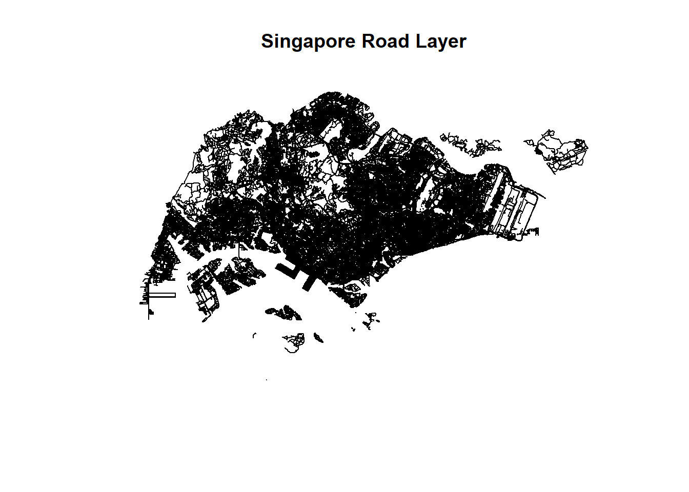
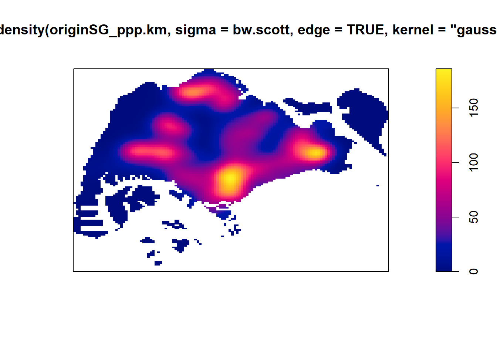
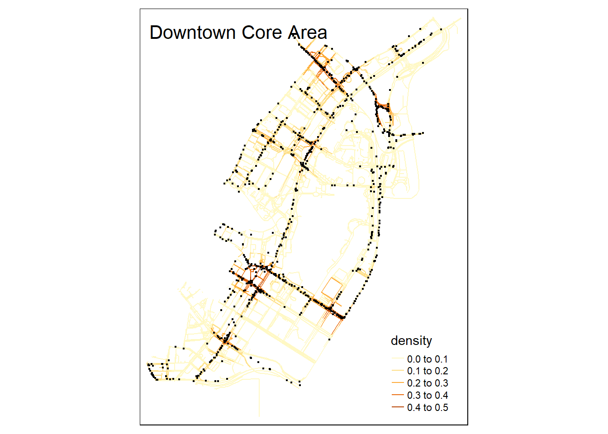
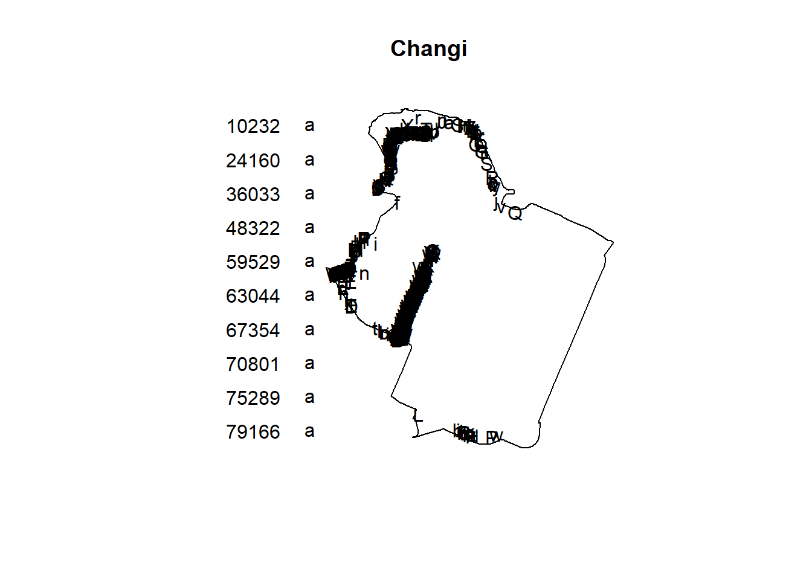
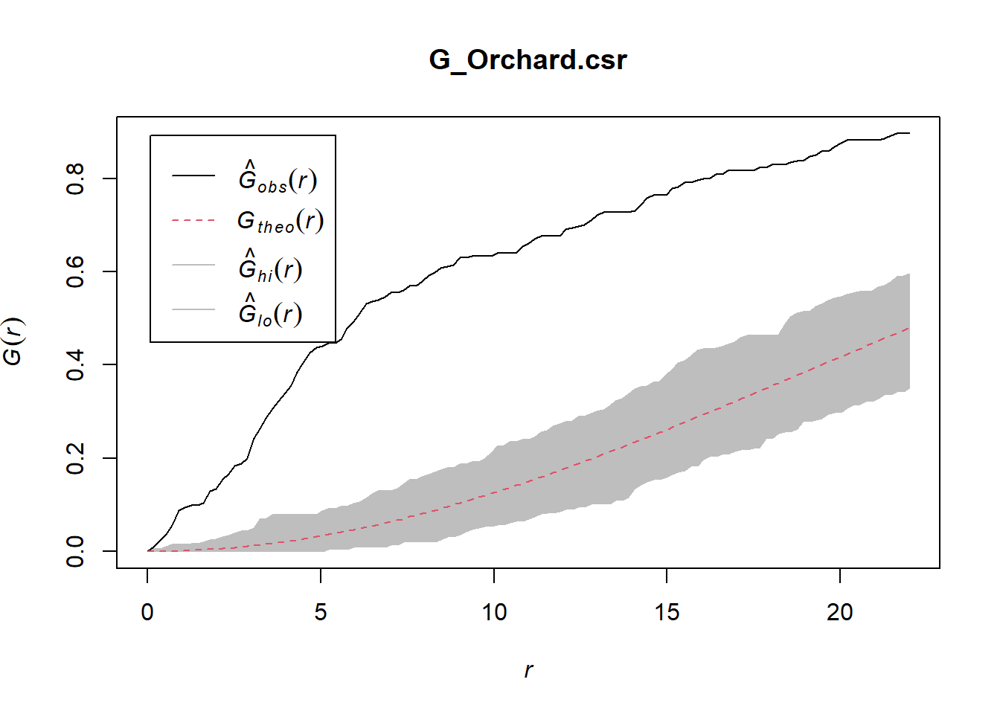
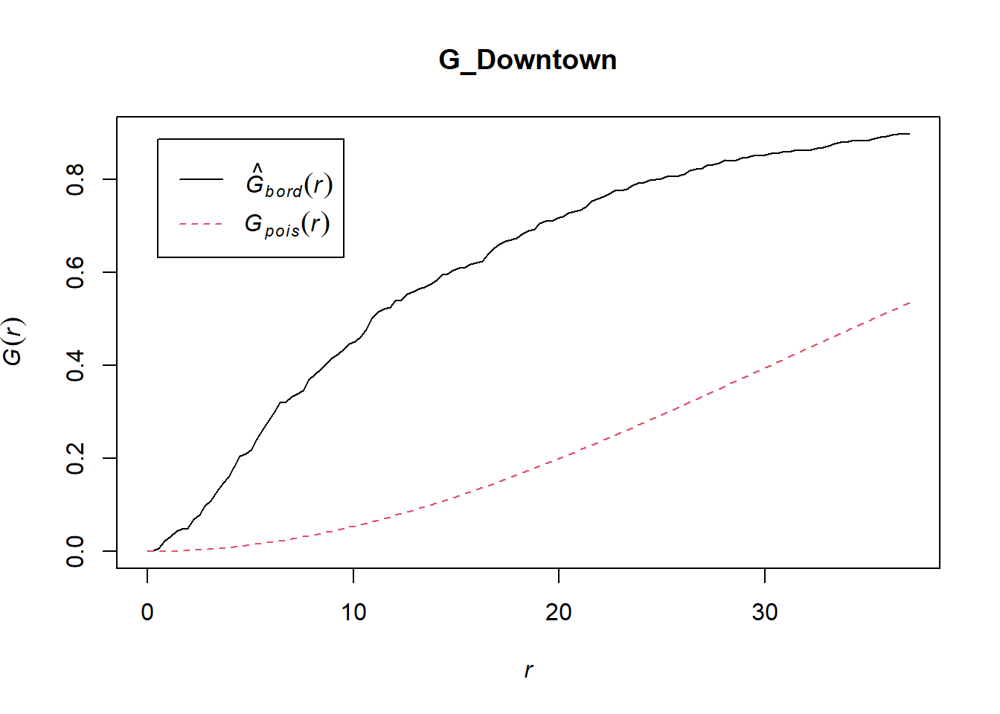
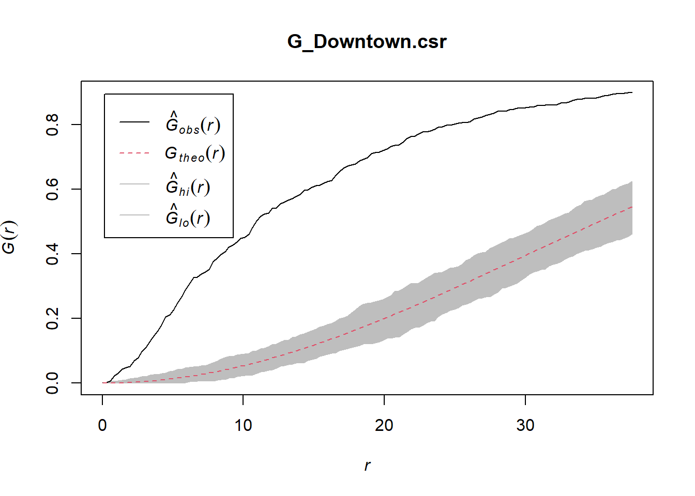
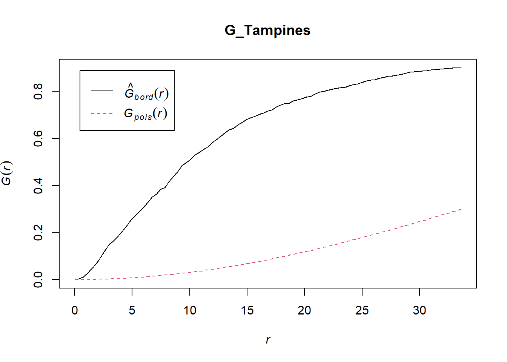
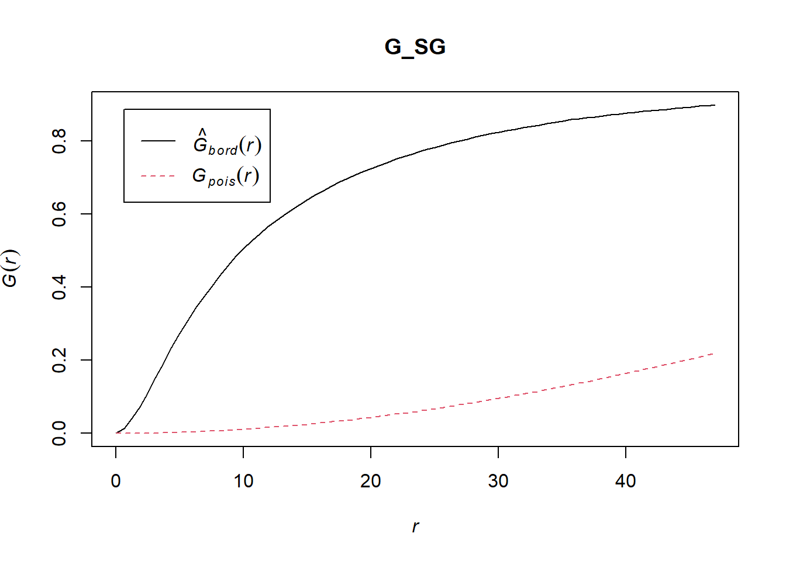

install.packages("maptools", repos = "https://packagemanager.posit.co/cran/2023-10-13")Take-home Exercise 1: Application of Spatial Point Patterns Analysis to discover the geographical distribution of Grab hailing services in Singapore
1. Overview
Human mobility, defined as the movement of persons through space and time, provides important insights into the spatial and temporal elements of human activity.
This study intends to use appropriate spatial point pattern analysis methods to reveal the geographical and spatiotemporal distribution of Grab hailing service locations in Singapore. This would further improve our understanding of how Grab services are spatially dispersed and evolve over time, providing useful insights for informed decision-making in the field of smart city planning.
2. The Data
This study will utilize three datasets, namely:
Grab-Posisi data for Singapore
Road dataset sourced from OpenStreetMap
Master Plan 2019 Subzone Boundary from Data.gov.sg.
3. Installation and Loading of Packages
The R packages that will be used in this study are:
sf: for importing, managing, and processing geospatial data
tidyverse: for performing data science tasks
tmap: for plotting cartographic quality static point patterns maps or interactive maps by using leaflet API
raster: reads, writes, manipulates, analyses and model of gridded spatial data
spatstat: has a wide range of useful functions for point pattern analysis
maptools: for manipulating geographic data
spNetwork: for performing spatial analysis on networks
classInt: for choosing univariate class intervals for mapping or other graphics purposes.
viridis: for generating the color maps in base R
arrow: for a wide range of data analysis tasks
lubridate: provides functions for working with dates and times
dplyr: for wrangling data
pacman::p_load(sf, tidyverse, tmap, raster, spatstat, maptools, spNetwork, classInt, viridis, arrow, lubridate, dplyr)4. Import Data
4.1 Grab-Posisi data
The read_parquet() function is associated with the arrow package in R. This function is used to read data from a Parquet file. However, it is important to note that the current data is aspatial and is not in the sf tibble data frame format. The data will be converted at a later stage in this study.
df <- read_parquet("../../data/GrabPosisi/part-00000.parquet")glimpse(df)Rows: 3,034,553
Columns: 9
$ trj_id <chr> "70014", "73573", "75567", "1410", "4354", "32630", "646…
$ driving_mode <chr> "car", "car", "car", "car", "car", "car", "car", "car", …
$ osname <chr> "android", "android", "android", "android", "android", "…
$ pingtimestamp <int> 1554943236, 1555582623, 1555141026, 1555731693, 15555844…
$ rawlat <dbl> 1.342326, 1.321781, 1.327088, 1.262482, 1.283799, 1.3003…
$ rawlng <dbl> 103.8890, 103.8564, 103.8613, 103.8238, 103.8072, 103.90…
$ speed <dbl> 18.910000, 17.719076, 14.021548, 13.026521, 14.812943, 2…
$ bearing <int> 248, 44, 34, 181, 93, 73, 82, 321, 324, 31, 203, 50, 252…
$ accuracy <dbl> 3.900, 4.000, 3.900, 4.000, 3.900, 3.900, 3.000, 3.649, …4.2 Road dataset
The st_read() function is associated with the sf package in R. This function is used to read spatial data from various formats. When using the st_read function to read a shapefile, there is no need to explicitly specify the file format.
road_sf <- st_read(dsn = "../../data",
layer = "gis_osm_roads_free_1")Reading layer `gis_osm_roads_free_1' from data source
`C:\viddyasri\IS415-GAA\data' using driver `ESRI Shapefile'
Simple feature collection with 1764332 features and 10 fields
Geometry type: LINESTRING
Dimension: XY
Bounding box: xmin: 99.66041 ymin: 0.8021131 xmax: 119.2601 ymax: 7.514393
Geodetic CRS: WGS 84glimpse(road_sf)Rows: 1,764,332
Columns: 11
$ osm_id <chr> "4386520", "4578273", "4579495", "4579533", "4579534", "45795…
$ code <int> 5113, 5114, 5122, 5122, 5122, 5122, 5141, 5122, 5122, 5122, 5…
$ fclass <chr> "primary", "secondary", "residential", "residential", "reside…
$ name <chr> "Orchard Road", "Jalan Bukit Bintang", "Jalan Nagasari", "Per…
$ ref <chr> NA, NA, NA, NA, NA, NA, NA, NA, NA, NA, NA, NA, NA, NA, NA, N…
$ oneway <chr> "F", "F", "B", "B", "B", "F", "F", "F", "F", "F", "B", "B", "…
$ maxspeed <int> 50, 0, 0, 0, 0, 0, 0, 0, 0, 0, 0, 0, 0, 0, 0, 0, 0, 50, 0, 0,…
$ layer <dbl> 0, 0, 0, 0, 0, 0, -1, 0, 0, 0, 0, 0, 0, 0, 0, 0, 0, 0, 0, 0, …
$ bridge <chr> "F", "F", "F", "F", "F", "F", "F", "F", "F", "F", "F", "F", "…
$ tunnel <chr> "F", "F", "F", "F", "F", "F", "T", "F", "F", "F", "F", "F", "…
$ geometry <LINESTRING [°]> LINESTRING (103.8301 1.3060..., LINESTRING (101.72…st_geometry(road_sf)Geometry set for 1764332 features
Geometry type: LINESTRING
Dimension: XY
Bounding box: xmin: 99.66041 ymin: 0.8021131 xmax: 119.2601 ymax: 7.514393
Geodetic CRS: WGS 84
First 5 geometries:4.3 Master Plan 2019 Subzone Boundary (Excluding Sea)
When using the st_read function to read a file that is not shapefile, it is necessary to explicitly specify the file format.
mpsz_sf <- st_read(dsn = "../../data",
layer = "MPSZ-2019")Reading layer `MPSZ-2019' from data source `C:\viddyasri\IS415-GAA\data' using driver `ESRI Shapefile'
Simple feature collection with 332 features and 6 fields
Geometry type: MULTIPOLYGON
Dimension: XY
Bounding box: xmin: 103.6057 ymin: 1.158699 xmax: 104.0885 ymax: 1.470775
Geodetic CRS: WGS 84glimpse(mpsz_sf)Rows: 332
Columns: 7
$ SUBZONE_N <chr> "MARINA EAST", "INSTITUTION HILL", "ROBERTSON QUAY", "JURON…
$ SUBZONE_C <chr> "MESZ01", "RVSZ05", "SRSZ01", "WISZ01", "MUSZ02", "MPSZ05",…
$ PLN_AREA_N <chr> "MARINA EAST", "RIVER VALLEY", "SINGAPORE RIVER", "WESTERN …
$ PLN_AREA_C <chr> "ME", "RV", "SR", "WI", "MU", "MP", "WI", "WI", "SI", "SI",…
$ REGION_N <chr> "CENTRAL REGION", "CENTRAL REGION", "CENTRAL REGION", "WEST…
$ REGION_C <chr> "CR", "CR", "CR", "WR", "CR", "CR", "WR", "WR", "CR", "CR",…
$ geometry <MULTIPOLYGON [°]> MULTIPOLYGON (((103.8802 1...., MULTIPOLYGON (…st_geometry(mpsz_sf)Geometry set for 332 features
Geometry type: MULTIPOLYGON
Dimension: XY
Bounding box: xmin: 103.6057 ymin: 1.158699 xmax: 104.0885 ymax: 1.470775
Geodetic CRS: WGS 84
First 5 geometries:5. Converting Aspatial Data to Geospatial Data
In this section, we will be preparing Grab taxi location points by origins and converting them into sf tibble data frames.
5.1 Convert integer to datetime format
In the previous section, when loading the data and inspecting its structure using the glimpse function, it’s clear that the pingtimestamp column is saved as an integer. Working with time-related data in raw integer format can be difficult since it lacks context.
To address this issue, the as_datetime() method from the lubridate package is used. This function is intended to convert different date and time representations, including integers, into datetime format.
df$pingtimestamp <- as_datetime(df$pingtimestamp)glimpse(df)Rows: 3,034,553
Columns: 9
$ trj_id <chr> "70014", "73573", "75567", "1410", "4354", "32630", "646…
$ driving_mode <chr> "car", "car", "car", "car", "car", "car", "car", "car", …
$ osname <chr> "android", "android", "android", "android", "android", "…
$ pingtimestamp <dttm> 2019-04-11 00:40:36, 2019-04-18 10:17:03, 2019-04-13 07…
$ rawlat <dbl> 1.342326, 1.321781, 1.327088, 1.262482, 1.283799, 1.3003…
$ rawlng <dbl> 103.8890, 103.8564, 103.8613, 103.8238, 103.8072, 103.90…
$ speed <dbl> 18.910000, 17.719076, 14.021548, 13.026521, 14.812943, 2…
$ bearing <int> 248, 44, 34, 181, 93, 73, 82, 321, 324, 31, 203, 50, 252…
$ accuracy <dbl> 3.900, 4.000, 3.900, 4.000, 3.900, 3.900, 3.000, 3.649, …5.2 Extracting location points by origin
Next, to prepare the Grab taxi location points by origin, we use the code below:
origin_df <- df %>%
group_by(trj_id) %>%
arrange(pingtimestamp) %>%
filter(row_number()==1) %>%
mutate(weekday = wday(pingtimestamp, label=TRUE, abbr=TRUE),
start_hr = factor(hour(pingtimestamp)),
day = factor(mday(pingtimestamp)))group_by(trj_id): the data frame is grouped based on the unique trip identifiers (trj_id).
arrange(pingtimestamp): within each trip group, the rows are arranged in ascending order based on the timestamp. This sorts the data in chronological order for each trip.
filter(row_number()==1): for each trip group, only the row with the first coordinate is retained. This captures the origin of each trip.
mutate function: is used to create additional columns that provide contextual information about each trip’s starting location.
5.3 Converting to sf tibble data frame
In this section, we transform origin_df into an sf tibble data frame using the st_as_sf function.
origin_sf <- st_as_sf(origin_df, coords = c("rawlng", "rawlat"), crs = 4326) %>% st_transform(crs = 3414)glimpse(origin_sf)Rows: 28,000
Columns: 11
Groups: trj_id [28,000]
$ trj_id <chr> "70895", "21926", "47498", "41322", "18103", "64813", "8…
$ driving_mode <chr> "car", "car", "car", "car", "car", "car", "car", "car", …
$ osname <chr> "android", "android", "ios", "android", "android", "ios"…
$ pingtimestamp <dttm> 2019-04-08 00:09:40, 2019-04-08 00:09:49, 2019-04-08 00…
$ speed <dbl> 6.799661, 10.812810, 18.307493, 18.670000, 14.072143, 19…
$ bearing <int> 41, 68, 307, 230, 155, 109, 213, 202, 179, 109, 312, 209…
$ accuracy <dbl> 4.000, 4.000, 8.000, 3.900, 4.000, 10.000, 10.000, 10.00…
$ weekday <ord> Mon, Mon, Mon, Mon, Mon, Mon, Mon, Mon, Mon, Mon, Mon, M…
$ start_hr <fct> 0, 0, 0, 0, 0, 0, 0, 0, 0, 0, 0, 0, 0, 0, 0, 0, 0, 0, 0,…
$ day <fct> 8, 8, 8, 8, 8, 8, 8, 8, 8, 8, 8, 8, 8, 8, 8, 8, 8, 8, 8,…
$ geometry <POINT [m]> POINT (21053.57 40263.52), POINT (31268.41 30410.2…
Note
Notice that a new geometry column has appeared.
st_geometry(origin_sf)Geometry set for 28000 features
Geometry type: POINT
Dimension: XY
Bounding box: xmin: 3661.475 ymin: 25201.14 xmax: 49845.23 ymax: 49685.08
Projected CRS: SVY21 / Singapore TM
First 5 geometries:6. Data Wrangling
6.1 Handle invalid geometries
Next, we check for invalid geometries and handle them accordingly.
length(which(st_is_valid(origin_sf) == FALSE))[1] 0length(which(st_is_valid(road_sf) == FALSE))[1] 0length(which(st_is_valid(mpsz_sf) == FALSE))[1] 6As shown above, the MPSZ data has 6 invalid geometries. To address this we use the st_make_valid function. This will result in the invalid geometries being removed.
mpsz_sf <- st_make_valid(mpsz_sf)
length(which(st_is_valid(mpsz_sf) == FALSE))[1] 06.2 Projection system transformation
All spatial data must be projected into EPSG:3414, which is a projected coordinate system specific to Singapore. Now, we verify whether the current projected CRS of the data is correct and if necessary, transform them.
st_crs(origin_sf)Coordinate Reference System:
User input: EPSG:3414
wkt:
PROJCRS["SVY21 / Singapore TM",
BASEGEOGCRS["SVY21",
DATUM["SVY21",
ELLIPSOID["WGS 84",6378137,298.257223563,
LENGTHUNIT["metre",1]]],
PRIMEM["Greenwich",0,
ANGLEUNIT["degree",0.0174532925199433]],
ID["EPSG",4757]],
CONVERSION["Singapore Transverse Mercator",
METHOD["Transverse Mercator",
ID["EPSG",9807]],
PARAMETER["Latitude of natural origin",1.36666666666667,
ANGLEUNIT["degree",0.0174532925199433],
ID["EPSG",8801]],
PARAMETER["Longitude of natural origin",103.833333333333,
ANGLEUNIT["degree",0.0174532925199433],
ID["EPSG",8802]],
PARAMETER["Scale factor at natural origin",1,
SCALEUNIT["unity",1],
ID["EPSG",8805]],
PARAMETER["False easting",28001.642,
LENGTHUNIT["metre",1],
ID["EPSG",8806]],
PARAMETER["False northing",38744.572,
LENGTHUNIT["metre",1],
ID["EPSG",8807]]],
CS[Cartesian,2],
AXIS["northing (N)",north,
ORDER[1],
LENGTHUNIT["metre",1]],
AXIS["easting (E)",east,
ORDER[2],
LENGTHUNIT["metre",1]],
USAGE[
SCOPE["Cadastre, engineering survey, topographic mapping."],
AREA["Singapore - onshore and offshore."],
BBOX[1.13,103.59,1.47,104.07]],
ID["EPSG",3414]]st_crs(road_sf)Coordinate Reference System:
User input: WGS 84
wkt:
GEOGCRS["WGS 84",
DATUM["World Geodetic System 1984",
ELLIPSOID["WGS 84",6378137,298.257223563,
LENGTHUNIT["metre",1]]],
PRIMEM["Greenwich",0,
ANGLEUNIT["degree",0.0174532925199433]],
CS[ellipsoidal,2],
AXIS["latitude",north,
ORDER[1],
ANGLEUNIT["degree",0.0174532925199433]],
AXIS["longitude",east,
ORDER[2],
ANGLEUNIT["degree",0.0174532925199433]],
ID["EPSG",4326]]The data is not in EPSG:3414, therefore, we do a transformation to assign it the right code.
road_sf_3414 <- st_transform(road_sf, 3414)
st_crs(road_sf_3414)Coordinate Reference System:
User input: EPSG:3414
wkt:
PROJCRS["SVY21 / Singapore TM",
BASEGEOGCRS["SVY21",
DATUM["SVY21",
ELLIPSOID["WGS 84",6378137,298.257223563,
LENGTHUNIT["metre",1]]],
PRIMEM["Greenwich",0,
ANGLEUNIT["degree",0.0174532925199433]],
ID["EPSG",4757]],
CONVERSION["Singapore Transverse Mercator",
METHOD["Transverse Mercator",
ID["EPSG",9807]],
PARAMETER["Latitude of natural origin",1.36666666666667,
ANGLEUNIT["degree",0.0174532925199433],
ID["EPSG",8801]],
PARAMETER["Longitude of natural origin",103.833333333333,
ANGLEUNIT["degree",0.0174532925199433],
ID["EPSG",8802]],
PARAMETER["Scale factor at natural origin",1,
SCALEUNIT["unity",1],
ID["EPSG",8805]],
PARAMETER["False easting",28001.642,
LENGTHUNIT["metre",1],
ID["EPSG",8806]],
PARAMETER["False northing",38744.572,
LENGTHUNIT["metre",1],
ID["EPSG",8807]]],
CS[Cartesian,2],
AXIS["northing (N)",north,
ORDER[1],
LENGTHUNIT["metre",1]],
AXIS["easting (E)",east,
ORDER[2],
LENGTHUNIT["metre",1]],
USAGE[
SCOPE["Cadastre, engineering survey, topographic mapping."],
AREA["Singapore - onshore and offshore."],
BBOX[1.13,103.59,1.47,104.07]],
ID["EPSG",3414]]st_crs(mpsz_sf)Coordinate Reference System:
User input: WGS 84
wkt:
GEOGCRS["WGS 84",
DATUM["World Geodetic System 1984",
ELLIPSOID["WGS 84",6378137,298.257223563,
LENGTHUNIT["metre",1]]],
PRIMEM["Greenwich",0,
ANGLEUNIT["degree",0.0174532925199433]],
CS[ellipsoidal,2],
AXIS["latitude",north,
ORDER[1],
ANGLEUNIT["degree",0.0174532925199433]],
AXIS["longitude",east,
ORDER[2],
ANGLEUNIT["degree",0.0174532925199433]],
ID["EPSG",4326]]The data is not in EPSG:3414, therefore, we do a transformation to assign it the right code.
mpsz_sf_3414 <- st_transform(mpsz_sf, 3414)
st_crs(mpsz_sf_3414)Coordinate Reference System:
User input: EPSG:3414
wkt:
PROJCRS["SVY21 / Singapore TM",
BASEGEOGCRS["SVY21",
DATUM["SVY21",
ELLIPSOID["WGS 84",6378137,298.257223563,
LENGTHUNIT["metre",1]]],
PRIMEM["Greenwich",0,
ANGLEUNIT["degree",0.0174532925199433]],
ID["EPSG",4757]],
CONVERSION["Singapore Transverse Mercator",
METHOD["Transverse Mercator",
ID["EPSG",9807]],
PARAMETER["Latitude of natural origin",1.36666666666667,
ANGLEUNIT["degree",0.0174532925199433],
ID["EPSG",8801]],
PARAMETER["Longitude of natural origin",103.833333333333,
ANGLEUNIT["degree",0.0174532925199433],
ID["EPSG",8802]],
PARAMETER["Scale factor at natural origin",1,
SCALEUNIT["unity",1],
ID["EPSG",8805]],
PARAMETER["False easting",28001.642,
LENGTHUNIT["metre",1],
ID["EPSG",8806]],
PARAMETER["False northing",38744.572,
LENGTHUNIT["metre",1],
ID["EPSG",8807]]],
CS[Cartesian,2],
AXIS["northing (N)",north,
ORDER[1],
LENGTHUNIT["metre",1]],
AXIS["easting (E)",east,
ORDER[2],
LENGTHUNIT["metre",1]],
USAGE[
SCOPE["Cadastre, engineering survey, topographic mapping."],
AREA["Singapore - onshore and offshore."],
BBOX[1.13,103.59,1.47,104.07]],
ID["EPSG",3414]]6.3 Preparing Singapore boundary layer
The MPSZ data includes subzone boundaries, however our needs are confined to Singapore’s general boundary. To do this, we will use the st_union function, which consolidates or combines geometric features into a single geometry, resulting in the combined border of all subzones in the dataset.
sg_sf <- mpsz_sf_3414 %>%
st_union() plot(sg_sf, main = "Singapore Boundary Layer")6.4 Preparing Singapore road layer
For this study, we are also required to extract the road layer specific to Singapore. This can be done with the st_intersection function. This function identifies and retains the spatial intersections between geometries, allowing us to isolate the road segments that fall within the boundaries of Singapore.
roadSG_sf <- st_intersection(sg_sf, road_sf_3414)plot(roadSG_sf, main = "Singapore Road Layer")
6.5 Mapping geospatial data sets with tmap
Let us visualize our data!
tmap_mode('plot')
tm_shape(mpsz_sf_3414) +
tm_polygons(col = "#F0E1D7", alpha = 0.5) +
tm_shape(origin_sf) +
tm_dots(size = 0.01, col = "#2B2B2B")
tmap_mode('plot')
tm_shape(origin_sf) +
tm_dots(size = 0.02, col = "#2B2B2B") +
tm_shape(roadSG_sf) +
tm_lines(lwd = 0.05, col = "#BF8D7A")7. Preparation before Deriving Kernel Density Estimation
7.1 Creating ppp objects
To use the functionalities provided by the spatstat package, our spatial data needs to be in the form of a point pattern object (ppp). In this section, we will transform our spatial data, which is currently stored as sf tibble data frames, into ppp objects using the as.ppp() function.
origin_ppp <- as.ppp(origin_sf)summary(origin_ppp)Marked planar point pattern: 28000 points
Average intensity 2.47621e-05 points per square unit
Coordinates are given to 3 decimal places
i.e. rounded to the nearest multiple of 0.001 units
marks are of type 'character'
Summary:
Length Class Mode
28000 character character
Window: rectangle = [3661.47, 49845.23] x [25201.14, 49685.08] units
(46180 x 24480 units)
Window area = 1130760000 square unitsNow, we plot origin_ppp.
plot(origin_ppp)7.2 Handling duplicated points
We check for any duplication in a ppp object using the code below.
any(duplicated(origin_ppp))[1] FALSEThe result is false, which indicates that there are no duplicated points in origin_ppp. Therefore, jittering, which is used to address overlapping points, will not be necessary in this context.
7.3 Creating an owin object
When analysing spatial point patterns, it is best to confine the analysis within a specific geographical area such as the Singapore boundary. In spatstat, an owin object is uniquely designed to represent this polygonal region.
sg_owin <- as.owin(sg_sf)Now, we plot and display the summary statistics of the output generated.
plot(sg_owin)summary(sg_owin)Window: polygonal boundary
82 separate polygons (36 holes)
vertices area relative.area
polygon 1 15268 7.00834e+08 8.93e-01
polygon 2 285 1.61128e+06 2.05e-03
polygon 3 719 5.40368e+07 6.89e-02
polygon 4 44 2.26583e+03 2.89e-06
polygon 5 27 1.50311e+04 1.92e-05
polygon 6 708 1.28815e+07 1.64e-02
polygon 7 (hole) 41 -4.01658e+04 -5.12e-05
polygon 8 (hole) 316 -5.11288e+04 -6.52e-05
polygon 9 77 3.29940e+05 4.20e-04
polygon 10 (hole) 3 -1.31452e-10 -1.68e-19
polygon 11 (hole) 3 -1.79054e-02 -2.28e-11
polygon 12 30 2.80002e+04 3.57e-05
polygon 13 (hole) 4 -2.50786e-01 -3.20e-10
polygon 14 (hole) 3 -8.52625e-02 -1.09e-10
polygon 15 (hole) 3 -3.13721e-02 -4.00e-11
polygon 16 (hole) 3 -3.50914e-02 -4.47e-11
polygon 17 (hole) 3 -1.29022e-01 -1.64e-10
polygon 18 (hole) 3 -5.61019e-02 -7.15e-11
polygon 19 (hole) 4 -4.34886e-01 -5.54e-10
polygon 20 (hole) 5 -1.43178e-01 -1.82e-10
polygon 21 71 8.18741e+03 1.04e-05
polygon 22 (hole) 4 -6.40504e-01 -8.16e-10
polygon 23 (hole) 3 -9.35842e-02 -1.19e-10
polygon 24 (hole) 38 -7.79903e+03 -9.94e-06
polygon 25 (hole) 3 -3.81487e-03 -4.86e-12
polygon 26 (hole) 3 -4.87319e-02 -6.21e-11
polygon 27 91 1.49663e+04 1.91e-05
polygon 28 (hole) 3 -4.25791e-02 -5.43e-11
polygon 29 (hole) 4 -3.47312e-02 -4.43e-11
polygon 30 3 1.96470e-01 2.50e-10
polygon 31 (hole) 3 -1.80743e-02 -2.30e-11
polygon 32 (hole) 270 -1.21366e+03 -1.55e-06
polygon 33 (hole) 19 -4.37731e+00 -5.58e-09
polygon 34 (hole) 35 -1.38430e+02 -1.76e-07
polygon 35 (hole) 23 -1.99689e+01 -2.54e-08
polygon 36 40 1.38603e+04 1.77e-05
polygon 37 (hole) 41 -6.00332e+03 -7.65e-06
polygon 38 (hole) 11 -8.36614e+01 -1.07e-07
polygon 39 (hole) 3 -3.69186e-03 -4.70e-12
polygon 40 45 2.51228e+03 3.20e-06
polygon 41 137 3.22285e+03 4.11e-06
polygon 42 147 3.10396e+03 3.96e-06
polygon 43 (hole) 4 -2.46124e-04 -3.14e-13
polygon 44 75 1.73525e+04 2.21e-05
polygon 45 83 5.28926e+03 6.74e-06
polygon 46 211 4.70522e+05 6.00e-04
polygon 47 106 3.04131e+03 3.88e-06
polygon 48 264 1.50631e+06 1.92e-03
polygon 49 71 5.63055e+03 7.17e-06
polygon 50 10 1.99759e+02 2.55e-07
polygon 51 (hole) 3 -2.73199e-02 -3.48e-11
polygon 52 483 2.06117e+06 2.63e-03
polygon 53 155 2.67503e+05 3.41e-04
polygon 54 1020 1.27781e+06 1.63e-03
polygon 55 (hole) 5 -5.18342e-01 -6.60e-10
polygon 56 (hole) 4 -7.19058e-01 -9.16e-10
polygon 57 (hole) 3 -2.53510e-02 -3.23e-11
polygon 58 (hole) 4 -7.56223e-02 -9.64e-11
polygon 59 (hole) 4 -1.23063e-04 -1.57e-13
polygon 60 65 8.42861e+04 1.07e-04
polygon 61 (hole) 3 -1.06327e-01 -1.35e-10
polygon 62 47 3.82089e+04 4.87e-05
polygon 63 6 4.50376e+02 5.74e-07
polygon 64 129 9.53762e+04 1.22e-04
polygon 65 4 2.69408e+02 3.43e-07
polygon 66 1045 4.44510e+06 5.66e-03
polygon 67 22 6.74620e+03 8.60e-06
polygon 68 59 3.43163e+04 4.37e-05
polygon 69 14 5.86528e+03 7.47e-06
polygon 70 94 5.96175e+04 7.60e-05
polygon 71 234 2.08755e+06 2.66e-03
polygon 72 10 4.90997e+02 6.26e-07
polygon 73 232 4.72887e+05 6.03e-04
polygon 74 (hole) 13 -3.92141e+02 -5.00e-07
polygon 75 15 4.03288e+04 5.14e-05
polygon 76 227 1.10308e+06 1.41e-03
polygon 77 10 6.60201e+03 8.41e-06
polygon 78 19 3.09219e+04 3.94e-05
polygon 79 145 9.61783e+05 1.23e-03
polygon 80 30 4.28953e+03 5.47e-06
polygon 81 37 1.29491e+04 1.65e-05
polygon 82 4 9.47128e+01 1.21e-07
enclosing rectangle: [2667.54, 56396.44] x [15748.72, 50256.33] units
(53730 x 34510 units)
Window area = 784784000 square units
Fraction of frame area: 0.4237.4 Combining point events object and owin object
This is the last step before deriving kernel density estimation. In this section, we extract Grab origin points that are located within Singapore by using the code below.
originSG_ppp = origin_ppp[sg_owin]
summary(originSG_ppp)Marked planar point pattern: 28000 points
Average intensity 3.56786e-05 points per square unit
Coordinates are given to 3 decimal places
i.e. rounded to the nearest multiple of 0.001 units
marks are of type 'character'
Summary:
Length Class Mode
28000 character character
Window: polygonal boundary
82 separate polygons (36 holes)
vertices area relative.area
polygon 1 15268 7.00834e+08 8.93e-01
polygon 2 285 1.61128e+06 2.05e-03
polygon 3 719 5.40368e+07 6.89e-02
polygon 4 44 2.26583e+03 2.89e-06
polygon 5 27 1.50311e+04 1.92e-05
polygon 6 708 1.28815e+07 1.64e-02
polygon 7 (hole) 41 -4.01658e+04 -5.12e-05
polygon 8 (hole) 316 -5.11288e+04 -6.52e-05
polygon 9 77 3.29940e+05 4.20e-04
polygon 10 (hole) 3 -1.31452e-10 -1.68e-19
polygon 11 (hole) 3 -1.79054e-02 -2.28e-11
polygon 12 30 2.80002e+04 3.57e-05
polygon 13 (hole) 4 -2.50786e-01 -3.20e-10
polygon 14 (hole) 3 -8.52625e-02 -1.09e-10
polygon 15 (hole) 3 -3.13721e-02 -4.00e-11
polygon 16 (hole) 3 -3.50914e-02 -4.47e-11
polygon 17 (hole) 3 -1.29022e-01 -1.64e-10
polygon 18 (hole) 3 -5.61019e-02 -7.15e-11
polygon 19 (hole) 4 -4.34886e-01 -5.54e-10
polygon 20 (hole) 5 -1.43178e-01 -1.82e-10
polygon 21 71 8.18741e+03 1.04e-05
polygon 22 (hole) 4 -6.40504e-01 -8.16e-10
polygon 23 (hole) 3 -9.35842e-02 -1.19e-10
polygon 24 (hole) 38 -7.79903e+03 -9.94e-06
polygon 25 (hole) 3 -3.81487e-03 -4.86e-12
polygon 26 (hole) 3 -4.87319e-02 -6.21e-11
polygon 27 91 1.49663e+04 1.91e-05
polygon 28 (hole) 3 -4.25791e-02 -5.43e-11
polygon 29 (hole) 4 -3.47312e-02 -4.43e-11
polygon 30 3 1.96470e-01 2.50e-10
polygon 31 (hole) 3 -1.80743e-02 -2.30e-11
polygon 32 (hole) 270 -1.21366e+03 -1.55e-06
polygon 33 (hole) 19 -4.37731e+00 -5.58e-09
polygon 34 (hole) 35 -1.38430e+02 -1.76e-07
polygon 35 (hole) 23 -1.99689e+01 -2.54e-08
polygon 36 40 1.38603e+04 1.77e-05
polygon 37 (hole) 41 -6.00332e+03 -7.65e-06
polygon 38 (hole) 11 -8.36614e+01 -1.07e-07
polygon 39 (hole) 3 -3.69186e-03 -4.70e-12
polygon 40 45 2.51228e+03 3.20e-06
polygon 41 137 3.22285e+03 4.11e-06
polygon 42 147 3.10396e+03 3.96e-06
polygon 43 (hole) 4 -2.46124e-04 -3.14e-13
polygon 44 75 1.73525e+04 2.21e-05
polygon 45 83 5.28926e+03 6.74e-06
polygon 46 211 4.70522e+05 6.00e-04
polygon 47 106 3.04131e+03 3.88e-06
polygon 48 264 1.50631e+06 1.92e-03
polygon 49 71 5.63055e+03 7.17e-06
polygon 50 10 1.99759e+02 2.55e-07
polygon 51 (hole) 3 -2.73199e-02 -3.48e-11
polygon 52 483 2.06117e+06 2.63e-03
polygon 53 155 2.67503e+05 3.41e-04
polygon 54 1020 1.27781e+06 1.63e-03
polygon 55 (hole) 5 -5.18342e-01 -6.60e-10
polygon 56 (hole) 4 -7.19058e-01 -9.16e-10
polygon 57 (hole) 3 -2.53510e-02 -3.23e-11
polygon 58 (hole) 4 -7.56223e-02 -9.64e-11
polygon 59 (hole) 4 -1.23063e-04 -1.57e-13
polygon 60 65 8.42861e+04 1.07e-04
polygon 61 (hole) 3 -1.06327e-01 -1.35e-10
polygon 62 47 3.82089e+04 4.87e-05
polygon 63 6 4.50376e+02 5.74e-07
polygon 64 129 9.53762e+04 1.22e-04
polygon 65 4 2.69408e+02 3.43e-07
polygon 66 1045 4.44510e+06 5.66e-03
polygon 67 22 6.74620e+03 8.60e-06
polygon 68 59 3.43163e+04 4.37e-05
polygon 69 14 5.86528e+03 7.47e-06
polygon 70 94 5.96175e+04 7.60e-05
polygon 71 234 2.08755e+06 2.66e-03
polygon 72 10 4.90997e+02 6.26e-07
polygon 73 232 4.72887e+05 6.03e-04
polygon 74 (hole) 13 -3.92141e+02 -5.00e-07
polygon 75 15 4.03288e+04 5.14e-05
polygon 76 227 1.10308e+06 1.41e-03
polygon 77 10 6.60201e+03 8.41e-06
polygon 78 19 3.09219e+04 3.94e-05
polygon 79 145 9.61783e+05 1.23e-03
polygon 80 30 4.28953e+03 5.47e-06
polygon 81 37 1.29491e+04 1.65e-05
polygon 82 4 9.47128e+01 1.21e-07
enclosing rectangle: [2667.54, 56396.44] x [15748.72, 50256.33] units
(53730 x 34510 units)
Window area = 784784000 square units
Fraction of frame area: 0.423Here is the visualization of the resulting output.
plot(originSG_ppp)9. Deriving Kernel Density Estimation
9.1 Rescaling data from meter to kilometer
The spatial data is in the SVY21 projection, and the unit of measurement for SVY21 is meters. Therefore, it is important to convert the unit of measurement to kilometers.
originSG_ppp.km <- rescale(originSG_ppp, 1000, "km")9.2 Choosing bandwidth & plotting map
Online sources recommend using the bw.ppl() algorithm for spatial patterns characterized by tight clusters, as it tends to produce more suitable values. However, they emphasize that if the goal is to identify a single tight cluster amid random noise, then the bw.diggle() method would likely be more effective. There are also methods such as bw.scott() and bw.CvL(). Let us compare these bandwidths with our previous tmap visualization.
plot(density(originSG_ppp.km,
sigma=bw.diggle,
edge=TRUE,
kernel="gaussian"))plot(density(originSG_ppp.km,
sigma=bw.ppl,
edge=TRUE,
kernel="gaussian"))plot(density(originSG_ppp.km,
sigma=bw.scott,
edge=TRUE,
kernel="gaussian"))
plot(density(originSG_ppp.km,
sigma=bw.CvL,
edge=TRUE,
kernel="gaussian"))tmap_mode('plot')
tm_shape(mpsz_sf_3414) +
tm_polygons(col = "#F0E1D7", alpha = 0.5) +
tm_shape(origin_sf) +
tm_dots(size = 0.01, col = "#2B2B2B")The visual analysis of the maps reveals that both bw.scott() and bw.CvL() result in more oversmoothed representations. This is evident in the overly spread gradient with bw.scott() and the merging of high-density regions into a uniform surface with bw.CvL(), making spatial patterns less apparent.
On the other hand, the maps generated with bw.diggle() and bw.ppl() show distinct differences. The bw.ppl() map appears to be more accurate, showcasing well-defined clusters that highlight concentrated areas, much like the spatial distribution observed when plotting the tmap of Grab origin points.
For the final kernel density estimation map, the bandwidth method bw.ppl() will be used with the default Gaussian kernel method.
Final:
grab_kde <- density(originSG_ppp.km,
sigma=bw.ppl,
edge=TRUE,
kernel="gaussian")
plot(grab_kde)
9.3 Kernel density estimation maps on OpenStreetMap
In this section, we will plot our kernel density estimation maps on OpenStreetMap. To achieve this, we must first convert the kernel density estimation maps into raster objects.
gridded_grab_kde <- as.SpatialGridDataFrame.im(grab_kde)
raster_grab_kde <- raster(gridded_grab_kde)Now, let’s take a look at this raster object.
raster_grab_kdeclass : RasterLayer
dimensions : 128, 128, 16384 (nrow, ncol, ncell)
resolution : 0.4197571, 0.2695907 (x, y)
extent : 2.667537, 56.39644, 15.74872, 50.25633 (xmin, xmax, ymin, ymax)
crs : NA
source : memory
names : v
values : -1.034489e-13, 845.4849 (min, max)As shown above, the CRS of the raster object is NA. This means that it has to be assigned a projection system.
projection(raster_grab_kde) <- CRS("+init=EPSG:3414 +units=km")
raster_grab_kdeclass : RasterLayer
dimensions : 128, 128, 16384 (nrow, ncol, ncell)
resolution : 0.4197571, 0.2695907 (x, y)
extent : 2.667537, 56.39644, 15.74872, 50.25633 (xmin, xmax, ymin, ymax)
crs : +proj=tmerc +lat_0=1.36666666666667 +lon_0=103.833333333333 +k=1 +x_0=28001.642 +y_0=38744.572 +ellps=WGS84 +units=km +no_defs
source : memory
names : v
values : -1.034489e-13, 845.4849 (min, max)Here is the kernel density estimation maps on OpenStreetMap.
tm_basemap("OpenStreetMap") +
tm_shape(raster_grab_kde) +
tm_raster("v", palette = "PuRd", alpha=0.65) +
tm_layout(legend.position = c("right", "bottom"),
main.title = "Grab Origin Points Density Map",
main.title.position = 'center',
main.title.size = 1,
frame = FALSE)9.4 Analysis of kernel density estimation maps
Based on the kernel density maps above, we observe a number of clusters, two of which are more notable – one concentrated in the east and another larger cluster in the central region. Below is a map showing the regions in Singapore, and our observation matches the map.
Singapore District Map
East Region Concentration: The unique concentration noticed in Singapore’s eastern region can be attributed to the fact that it is close to Changi Airport. Changi Airport, as a major international hub, has a high volume of traffic, including both locals and visitors. The kernel density map could be reflecting the increased human mobility as they employ Grab services to go to and from the airport. Comparing with the Singapore district map above, the cluster seems to be formed around planning areas such as Changi and Tampines.
Central Region Cluster: Moving towards the central region, we see a larger cluster, primarily in the Central Business District (CBD). This concentration is to be expected given that the CBD is Singapore’s financial and commercial core. The daily influx of people commuting to and from work in this area adds to the high human mobility. Comparing with the Singapore district map above, the cluster seems to be formed in the core central region around planning areas such as Outram, Museum, Newton, River Valley, Singapore River, Rochor, Orchard and Downtown Core.
West and North Region Concentration: Unlike the more concentrated clusters found in the east and the central business area, the west and north regions have smaller clusters that appear to be slightly more dispersed from one another. The observed dispersion could be explained by the residential landscape of both regions. The presence of numerous residential areas, industrial zones, and educational institutions affects human mobility as these are common areas that people go to. These areas are not necessarily close to each other, prompting the people around the area to travel by Grab.
10. Deriving Network Constrained Kernel Density Estimation
Network constrained kernel density estimation is designed specifically for analyzing spatial point events that occur on or alongside a network.
Based on previous analysis, where the two clusters of primary interest were Singapore’s east and central regions, we will concentrate and examine these planning areas in these regions in greater depth with the use of network restricted kernel density estimation. This technique will enable us to incorporate the underlying network structure, such as roads and transportation links, in order to further understand the spatial distribution of events inside these clusters.
For the central region, we will examine the busier areas which are Orchard, the major shopping and entertainment hub, and Downtown Core, the business district.
For the east region, we will examine the Tampines and Changi areas, which are both relatively close to Changi Airport.
10.1 Preparing the road layer and origin points
First, we extract the road layer data and Grab origin points data for the specific areas of interests.
~ Road Layer ~
orchard_area = mpsz_sf_3414[mpsz_sf_3414$PLN_AREA_N=='ORCHARD',]
roads_in_orchard = st_intersection(roadSG_sf, orchard_area)
downtown_core = mpsz_sf_3414[mpsz_sf_3414$PLN_AREA_N=='DOWNTOWN CORE',]
roads_in_downtown = st_intersection(roadSG_sf, downtown_core)~ Origin Points ~
points_in_orchard = st_intersection(origin_sf, orchard_area)
points_in_downtown = st_intersection(origin_sf, downtown_core)~ Road Layer ~
tampines_area = mpsz_sf_3414[mpsz_sf_3414$PLN_AREA_N=='TAMPINES',]
roads_in_tampines = st_intersection(roadSG_sf, tampines_area)
changi_area = mpsz_sf_3414[mpsz_sf_3414$PLN_AREA_N=='CHANGI',]
roads_in_changi = st_intersection(roadSG_sf, changi_area)~ Origin Points ~
points_in_tampines = st_intersection(origin_sf, tampines_area)
points_in_changi = st_intersection(origin_sf, changi_area)10.2 Visualising the geospatial data
Next, we visualize the extracted data.
tmap_mode('plot')
tm_shape(points_in_orchard) +
tm_dots(size = 0.02, col = "#2B2B2B") +
tm_shape(roads_in_orchard) +
tm_lines(lwd = 0.05, col = "#BF8D7A") +
tm_layout(title = "Orchard Area")
tmap_mode('plot')
tm_shape(points_in_downtown) +
tm_dots(size = 0.02, col = "#2B2B2B") +
tm_shape(roads_in_downtown) +
tm_lines(lwd = 0.05, col = "#BF8D7A") +
tm_layout(title = "Downtown Core Area")tmap_mode('plot')
tm_shape(points_in_tampines) +
tm_dots(size = 0.02, col = "#2B2B2B") +
tm_shape(roads_in_tampines) +
tm_lines(lwd = 0.05, col = "#BF8D7A") +
tm_layout(title = "Tampines Area")
tmap_mode('plot')
tm_shape(points_in_changi) +
tm_dots(size = 0.02, col = "#2B2B2B") +
tm_shape(roads_in_changi) +
tm_lines(lwd = 0.05, col = "#BF8D7A") +
tm_layout(title = "Changi Area")10.3 Preparing the lixels objects
Before computing NetKDE, the SpatialLines object need to be cut into lixels with a specified minimal distance. As the road data is in type GEOMETRY after using st_intersection() and lixels involve LINESTRING, we first cast the road data into the appropriate geometry type.
roads_in_orchard <- roads_in_orchard %>%
st_sf() %>%
st_cast("LINESTRING")
roads_in_downtown <- roads_in_downtown %>%
st_sf() %>%
st_cast("LINESTRING")lixels_central_orchard <- lixelize_lines(roads_in_orchard,
700,
mindist = 350)
lixels_central_downtown <- lixelize_lines(roads_in_downtown,
700,
mindist = 350)roads_in_tampines <- roads_in_tampines %>%
st_sf() %>%
st_cast("LINESTRING")
roads_in_changi <- roads_in_changi %>%
st_sf() %>%
st_cast("LINESTRING")lixels_east_tampines <- lixelize_lines(roads_in_tampines,
700,
mindist = 350)
lixels_east_changi <- lixelize_lines(roads_in_changi,
700,
mindist = 350)10.4 Generating line centre points
Next, we generate a SpatialPointsDataFrame (i.e. samples) with line centre points. Line center points help provide a more accurate representation of the spatial distribution of events along the network.
samples_central_orchard <- lines_center(lixels_central_orchard)
samples_central_downtown <- lines_center(lixels_central_downtown)samples_east_tampines <- lines_center(lixels_east_tampines)
samples_east_changi <- lines_center(lixels_east_changi)10.5 Performing NetKDE
densities_orchard <- nkde(roads_in_orchard,
events = points_in_orchard,
w = rep(1,nrow(points_in_orchard)),
samples = samples_central_orchard,
kernel_name = "quartic",
bw = 300,
div= "bw",
method = "simple",
digits = 1,
tol = 1,
grid_shape = c(1,1),
max_depth = 8,
agg = 5,
sparse = TRUE,
verbose = FALSE)
densities_downtown <- nkde(roads_in_downtown,
events = points_in_downtown,
w = rep(1,nrow(points_in_downtown)),
samples = samples_central_downtown,
kernel_name = "quartic",
bw = 300,
div= "bw",
method = "simple",
digits = 1,
tol = 1,
grid_shape = c(1,1),
max_depth = 8,
agg = 5,
sparse = TRUE,
verbose = FALSE)densities_tampines <- nkde(roads_in_tampines,
events = points_in_tampines,
w = rep(1,nrow(points_in_tampines)),
samples = samples_east_tampines,
kernel_name = "quartic",
bw = 300,
div= "bw",
method = "simple",
digits = 1,
tol = 1,
grid_shape = c(1,1),
max_depth = 8,
agg = 5,
sparse = TRUE,
verbose = FALSE)
densities_changi <- nkde(roads_in_changi,
events = points_in_changi,
w = rep(1,nrow(points_in_changi)),
samples = samples_east_changi,
kernel_name = "quartic",
bw = 300,
div= "bw",
method = "simple",
digits = 1,
tol = 1,
grid_shape = c(1,1),
max_depth = 8,
agg = 5,
sparse = TRUE,
verbose = FALSE)10.6 Visualising NetKDE
Now it is time to visualise the resulting network constrained kernel density estimation maps. Before we can visualise the NetKDE values, we will need to insert the computed density values into samples and lixels objects as density field.
samples_central_orchard$density <- densities_orchard
samples_central_downtown$density <- densities_downtown
lixels_central_orchard$density <- densities_orchard
lixels_central_downtown$density <- densities_downtownSince the SVY21 projection system is in meter, the computed density values are very small. Therefore, it is important to convert the unit of measurement to kilometers.
samples_central_orchard$density <- samples_central_orchard$density*1000
samples_central_downtown$density <- samples_central_downtown$density*1000
lixels_central_orchard$density <- lixels_central_orchard$density*1000
lixels_central_downtown$density <- lixels_central_downtown$density*1000samples_east_tampines$density <- densities_tampines
samples_east_changi$density <- densities_changi
lixels_east_tampines$density <- densities_tampines
lixels_east_changi$density <- densities_changiSince the SVY21 projection system is in meter, the computed density values are very small. Therefore, it is important to convert the unit of measurement to kilometers.
samples_east_tampines$density <- samples_east_tampines$density*1000
samples_east_changi$density <- samples_east_changi$density*1000
lixels_east_tampines$density <- lixels_east_tampines$density*1000
lixels_east_changi$density <- lixels_east_changi$density*1000Now, we plot.
tmap_mode('plot')
tm_shape(lixels_central_orchard) +
tm_lines(col="density") +
tm_shape(points_in_orchard) +
tm_dots() +
tm_layout(title = "Orchard Area")tmap_mode('plot')
tm_shape(lixels_central_downtown) +
tm_lines(col="density") +
tm_shape(points_in_downtown) +
tm_dots() +
tm_layout(title = "Downtown Core Area")
tmap_mode('plot')
tm_shape(lixels_east_tampines) +
tm_lines(col = "density") +
tm_shape(points_in_tampines) +
tm_dots() +
tm_layout(title = "Tampines Area")
tmap_mode('plot')
tm_shape(lixels_east_changi) +
tm_lines(col = "density") +
tm_shape(points_in_changi) +
tm_dots() +
tm_layout(title = "Changi Area")
10.7 Analysis of network constrained kernel density estimation maps
As seen in the maps generated above, the darker regions along specific road segments suggest major roads, intersections or transportation nodes with increased movement and, possibly, these nodes tend to be the spots where there is a greater demand for Grab services. The Grab origin points in these darker regions appear to form clusters, which may reflect local travel patterns and preferences in their respective regions.
11. 2nd Order Spatial Point Patterns Analysis
In this section, we will be carrying out second-order spatial point pattern analysis to provide statistical insights that complement the visual information obtained from our previous kernel density maps. This analysis will be done on the four areas of focus from the previous section to confirm our findings, that the resulting kernel density maps from previous sections are clustered.
11.1 Creating owin and ppp objects for focal clusters
We start by making owin objects of the central and east regions.
central_owin_orchard <- as.owin(mpsz_sf_3414[mpsz_sf_3414$PLN_AREA_N == "ORCHARD",])
central_owin_downtown <- as.owin(mpsz_sf_3414[mpsz_sf_3414$PLN_AREA_N == "DOWNTOWN CORE",])
east_owin_tampines <- as.owin(mpsz_sf_3414[mpsz_sf_3414$PLN_AREA_N == "TAMPINES",])
east_owin_changi <- as.owin(mpsz_sf_3414[mpsz_sf_3414$PLN_AREA_N == "CHANGI",])Next, we combine our point events object and owin object.
central_ppp_orchard <- origin_ppp[central_owin_orchard]
central_ppp_downtown <- origin_ppp[central_owin_downtown]
east_ppp_tampines <- origin_ppp[east_owin_tampines]
east_ppp_changi <- origin_ppp[east_owin_changi]Now, we plot.
plot(central_ppp_orchard, main = "Orchard")plot(central_ppp_downtown, main = "Downtown Core")plot(east_ppp_tampines, main = "Tampines")plot(east_ppp_changi, main = "Changi")
11.2 G-Function
We perform second-order spatial point pattern analysis using the G-function followed by a Monte Carlo test. The hypothesis are as follows for each of the four areas:
H0: The distribution of Grab origin points are randomly distributed.
H1: The distribution of Grab origin points are not randomly distributed.
Significance level: 0.01
The null hypothesis will be rejected if p-value is smaller than alpha value of 0.01.
We start by computing the G-function estimation, followed by the complete spatial randomness test.
G-Function Estimation:
G_Orchard = Gest(central_ppp_orchard, correction = "border")
plot(G_Orchard)Complete Spatial Randomness Test:
G_Orchard.csr <- envelope(central_ppp_orchard, Gest, nsim = 999)Generating 999 simulations of CSR ...
1, 2, 3, ......10.........20.........30.........40.........50.........60..
.......70.........80.........90.........100.........110.........120.........130
.........140.........150.........160.........170.........180.........190........
.200.........210.........220.........230.........240.........250.........260......
...270.........280.........290.........300.........310.........320.........330....
.....340.........350.........360.........370.........380.........390.........400..
.......410.........420.........430.........440.........450.........460.........470
.........480.........490.........500.........510.........520.........530........
.540.........550.........560.........570.........580.........590.........600......
...610.........620.........630.........640.........650.........660.........670....
.....680.........690.........700.........710.........720.........730.........740..
.......750.........760.........770.........780.........790.........800.........810
.........820.........830.........840.........850.........860.........870........
.880.........890.........900.........910.........920.........930.........940......
...950.........960.........970.........980.........990........
999.
Done.plot(G_Orchard.csr)
G-Function Estimation:
G_Downtown = Gest(central_ppp_downtown, correction = "border")
plot(G_Downtown)
Complete Spatial Randomness Test:
G_Downtown.csr <- envelope(central_ppp_downtown, Gest, nsim = 999)Generating 999 simulations of CSR ...
1, 2, 3, ......10.........20.........30.........40.........50.........60..
.......70.........80.........90.........100.........110.........120.........130
.........140.........150.........160.........170.........180.........190........
.200.........210.........220.........230.........240.........250.........260......
...270.........280.........290.........300.........310.........320.........330....
.....340.........350.........360.........370.........380.........390.........400..
.......410.........420.........430.........440.........450.........460.........470
.........480.........490.........500.........510.........520.........530........
.540.........550.........560.........570.........580.........590.........600......
...610.........620.........630.........640.........650.........660.........670....
.....680.........690.........700.........710.........720.........730.........740..
.......750.........760.........770.........780.........790.........800.........810
.........820.........830.........840.........850.........860.........870........
.880.........890.........900.........910.........920.........930.........940......
...950.........960.........970.........980.........990........
999.
Done.plot(G_Downtown.csr)
G-Function Estimation:
G_Tampines = Gest(east_ppp_tampines, correction = "border")
plot(G_Tampines)
Complete Spatial Randomness Test:
G_Tampines.csr <- envelope(east_ppp_tampines, Gest, nsim = 999)Generating 999 simulations of CSR ...
1, 2, 3, ......10 [5:22 remaining] .........20 [4:33 remaining] ...
......30 [4:06 remaining] .........40 [3:44 remaining] .........50 [3:23 remaining] ..
.......60 [3:06 remaining] .........70 [2:51 remaining] .........80 [2:40 remaining] .
........90 [2:30 remaining] .........100 [2:20 remaining] .........110
[2:11 remaining] .........120 [2:03 remaining] .........130 [1:56 remaining] .........
140 [1:50 remaining] .........150 [1:45 remaining] .........160 [1:40 remaining] ........
.170 [1:36 remaining] .........180 [1:31 remaining] .........190 [1:27 remaining] .......
..200 [1:24 remaining] .........210 [1:21 remaining] .........220 [1:17 remaining] ......
...230 [1:53 remaining] .........240 [1:49 remaining] .........250 [1:45 remaining] .....
....260 [1:42 remaining] .........270 [1:39 remaining] .........280 [1:36 remaining] ....
.....290 [1:33 remaining] .........300 [1:30 remaining] .........310 [1:27 remaining] ...
......320 [1:24 remaining] .........330 [1:22 remaining] .........340 [1:19 remaining] ..
.......350 [1:17 remaining] .........360 [1:14 remaining] .........370 [1:12 remaining] .
........380 [1:10 remaining] .........390 [1:08 remaining] .........400
[1:06 remaining] .........410 [1:04 remaining] .........420 [1:02 remaining] .........
430 [1:00 remaining] .........440 [58 sec remaining] .........450 [57 sec remaining] ........
.460 [55 sec remaining] .........470 [53 sec remaining] .........480 [52 sec remaining] .......
..490 [50 sec remaining] .........500 [49 sec remaining] .........510 [47 sec remaining] ......
...520 [46 sec remaining] .........530 [45 sec remaining] .........540 [43 sec remaining] .....
....550 [42 sec remaining] .........560 [41 sec remaining] .........570 [39 sec remaining] ....
.....580 [38 sec remaining] .........590 [37 sec remaining] .........600 [36 sec remaining] ...
......610 [35 sec remaining] .........620 [33 sec remaining] .........630 [32 sec remaining] ..
.......640 [31 sec remaining] .........650 [30 sec remaining] .........660 [29 sec remaining] .
........670 [28 sec remaining] .........680 [27 sec remaining] .........690
[26 sec remaining] .........700 [25 sec remaining] .........710 [24 sec remaining] .........
720 [23 sec remaining] .........730 [22 sec remaining] .........740 [21 sec remaining] ........
.750 [20 sec remaining] .........760 [19 sec remaining] .........770 [18 sec remaining] .......
..780 [17 sec remaining] .........790 [16 sec remaining] .........800 [16 sec remaining] ......
...810 [15 sec remaining] .........820 [14 sec remaining] .........830 [13 sec remaining] .....
....840 [12 sec remaining] .........850 [11 sec remaining] .........860 [11 sec remaining] ....
.....870 [10 sec remaining] .........880 [9 sec remaining] .........890 [8 sec remaining] ...
......900 [7 sec remaining] .........910 [7 sec remaining] .........920 [6 sec remaining] ..
.......930 [5 sec remaining] .........940 [4 sec remaining] .........950 [4 sec remaining] .
........960 [3 sec remaining] .........970 [2 sec remaining] .........980
[1 sec remaining] .........990 [1 sec remaining] ........
999.
Done.plot(G_Tampines.csr)G-Function Estimation:
G_Changi = Gest(east_ppp_changi, correction = "border")
plot(G_Changi)Complete Spatial Randomness Test:
G_Changi.csr <- envelope(east_ppp_changi, Gest, nsim = 999)Generating 999 simulations of CSR ...
1, 2, 3, ......10.........20.........30.........40.........50.........60..
.......70.........80.........90.........100.........110.........120.........130
.........140.........150.........160.........170.........180.........190........
.200.........210.........220.........230.........240.........250.........260......
...270.........280.........290.........300.........310.........320.........330....
.....340.........350.........360.........370.........380.........390.........400..
.......410.........420.........430.........440.........450.........460.........470
.........480.........490.........500.........510.........520.........530........
.540.........550.........560.........570.........580.........590.........600......
...610.........620.........630.........640.........650.........660.........670....
.....680.........690.........700.........710.........720.........730.........740..
.......750.........760.........770.........780.........790.........800.........810
.........820.........830.........840.........850.........860.........870........
.880.........890.........900.........910.........920.........930.........940......
...950.........960.........970.........980.........990........
999.
Done.plot(G_Changi.csr)As seen in the plotted charts above, the observed G(r) for all four planning areas are significantly above the upper envelope of the simulation which indicates that there is a significant clustering of points. Therefore, we reject the null hypothesis that Grab origin points in Orchard are randomly distributed.
11.3 G-Function for the whole of Singapore
As a final analysis, we perform the G-function on the entire area of Singapore to see if the findings for targeted areas hold true for the entire region and if the targeted areas can act as a representative of the overall spatial distribution.
G-Function Estimation:
G_SG = Gest(originSG_ppp, correction = "border")
plot(G_SG)
Complete Spatial Randomness Test:
G_SG.csr <- envelope(originSG_ppp, Gest, nsim = 100)Generating 100 simulations of CSR ...
1, 2,
[40:15 remaining, estimate finish 2024-03-05 04:13:08]
3,
[1:13:14 remaining, estimate finish 2024-03-05 04:47:13]
4,
[58:36 remaining, estimate finish 2024-03-05 04:32:55]
5,
[49:58 remaining, estimate finish 2024-03-05 04:24:33]
6,
[43:53 remaining, estimate finish 2024-03-05 04:18:41]
7,
[39:57 remaining, estimate finish 2024-03-05 04:15:01]
8,
[37:58 remaining, estimate finish 2024-03-05 04:13:20]
9,
[37:14 remaining, estimate finish 2024-03-05 04:12:59]
10,
[39:49 remaining, estimate finish 2024-03-05 04:16:16]
11,
[39:05 remaining, estimate finish 2024-03-05 04:15:57]
12,
[49:23 remaining, estimate finish 2024-03-05 04:28:02]
13,
[48:45 remaining, estimate finish 2024-03-05 04:27:57]
14,
[46:07 remaining, estimate finish 2024-03-05 04:25:34]
15,
[43:47 remaining, estimate finish 2024-03-05 04:23:28]
16,
[41:47 remaining, estimate finish 2024-03-05 04:21:43]
17,
[40:26 remaining, estimate finish 2024-03-05 04:20:42]
18,
[39:48 remaining, estimate finish 2024-03-05 04:20:31]
19,
[41:45 remaining, estimate finish 2024-03-05 04:23:30]
20,
[40:50 remaining, estimate finish 2024-03-05 04:23:01]
21,
[40:46 remaining, estimate finish 2024-03-05 04:23:33]
22,
[40:23 remaining, estimate finish 2024-03-05 04:23:43]
23,
[39:23 remaining, estimate finish 2024-03-05 04:23:07]
24,
[38:14 remaining, estimate finish 2024-03-05 04:22:16]
25,
[37:08 remaining, estimate finish 2024-03-05 04:21:30]
26,
[37:24 remaining, estimate finish 2024-03-05 04:22:31]
27,
[39:36 remaining, estimate finish 2024-03-05 04:26:11]
28,
[39:34 remaining, estimate finish 2024-03-05 04:26:53]
29,
[39:13 remaining, estimate finish 2024-03-05 04:27:10]
30,
[38:20 remaining, estimate finish 2024-03-05 04:26:41]
31,
[37:18 remaining, estimate finish 2024-03-05 04:26:00]
32,
[36:30 remaining, estimate finish 2024-03-05 04:25:37]
33,
[36:21 remaining, estimate finish 2024-03-05 04:26:12]
34,
[35:33 remaining, estimate finish 2024-03-05 04:25:48]
35,
[34:38 remaining, estimate finish 2024-03-05 04:25:13]
36,
[33:43 remaining, estimate finish 2024-03-05 04:24:38]
37,
[33:00 remaining, estimate finish 2024-03-05 04:24:20]
38,
[32:51 remaining, estimate finish 2024-03-05 04:24:55]
39,
[32:46 remaining, estimate finish 2024-03-05 04:25:39]
40,
[32:00 remaining, estimate finish 2024-03-05 04:25:16]
41,
[31:27 remaining, estimate finish 2024-03-05 04:25:14]
42,
[32:09 remaining, estimate finish 2024-03-05 04:27:21]
43,
[31:06 remaining, estimate finish 2024-03-05 04:26:30]
44,
[30:05 remaining, estimate finish 2024-03-05 04:25:40]
45,
[29:06 remaining, estimate finish 2024-03-05 04:24:52]
46,
[28:07 remaining, estimate finish 2024-03-05 04:24:01]
47,
[27:10 remaining, estimate finish 2024-03-05 04:23:14]
48,
[26:16 remaining, estimate finish 2024-03-05 04:22:29]
49,
[25:25 remaining, estimate finish 2024-03-05 04:21:48]
50,
[24:36 remaining, estimate finish 2024-03-05 04:21:10]
51,
[23:49 remaining, estimate finish 2024-03-05 04:20:36]
52,
[23:07 remaining, estimate finish 2024-03-05 04:20:09]
53,
[22:28 remaining, estimate finish 2024-03-05 04:19:49]
54,
[21:47 remaining, estimate finish 2024-03-05 04:19:21]
55,
[21:05 remaining, estimate finish 2024-03-05 04:18:51]
56,
[20:23 remaining, estimate finish 2024-03-05 04:18:21]
57,
[20:05 remaining, estimate finish 2024-03-05 04:18:43]
58,
[19:26 remaining, estimate finish 2024-03-05 04:18:16]
59,
[18:47 remaining, estimate finish 2024-03-05 04:17:50]
60,
[18:10 remaining, estimate finish 2024-03-05 04:17:27]
61,
[17:34 remaining, estimate finish 2024-03-05 04:17:04]
62,
[17:00 remaining, estimate finish 2024-03-05 04:16:45]
63,
[16:24 remaining, estimate finish 2024-03-05 04:16:22]
64,
[15:49 remaining, estimate finish 2024-03-05 04:15:58]
65,
[15:14 remaining, estimate finish 2024-03-05 04:15:34]
66,
[14:39 remaining, estimate finish 2024-03-05 04:15:09]
67,
[14:05 remaining, estimate finish 2024-03-05 04:14:45]
68,
[13:32 remaining, estimate finish 2024-03-05 04:14:20]
69,
[12:59 remaining, estimate finish 2024-03-05 04:13:57]
70,
[12:28 remaining, estimate finish 2024-03-05 04:13:36]
71,
[12:09 remaining, estimate finish 2024-03-05 04:13:57]
72,
[11:40 remaining, estimate finish 2024-03-05 04:13:42]
73,
[11:11 remaining, estimate finish 2024-03-05 04:13:28]
74,
[10:42 remaining, estimate finish 2024-03-05 04:13:13]
75,
[10:13 remaining, estimate finish 2024-03-05 04:12:57]
76, [9:44 remaining] 77, [9:15 remaining] 78, [8:47 remaining] 79, [8:19 remaining] 80, [7:51 remaining] 81, [7:24 remaining] 82, [6:58 remaining] 83, [6:32 remaining] 84, [6:07 remaining] 85, [5:44 remaining] 86, [5:24 remaining] 87, [4:59 remaining] 88, [4:34 remaining] 89, [4:10 remaining] 90, [3:46 remaining] 91, [3:22 remaining] 92, [2:59 remaining] 93, [2:35 remaining] 94, [2:12 remaining] 95,
[1:50 remaining] 96, [1:28 remaining] 97, [1:05 remaining] 98, [43 sec remaining] 99, [22 sec remaining]
100.
Done.plot(G_SG.csr)Similar to the four planning areas, the observed G(r) is above the upper envelope of the simulation which indicates that there is a significant clustering of points. Therefore, we reject the null hypothesis that Grab origin points in Singapore are randomly distributed, proving that the spatial distribution is indeed clustered.
12. References
Take-home Exercise 1: Geographic Analysis of the Supply and Demand of Childcare Services in Singapore by Xiao Rong Wong.
Take-Home Exercise 2: Spatial Point Patterns Analysis of Airbnb Listings in Singapore by MEGAN SIM TZE YEN.
Take-Home Exercise 1: Application of Spatial Point Pattern Analysis on Osun State, Nigeria by Michelle Leong Hwee-Ling.
Hands-on Exercise 3
In-class Exercise 2 and 3
R for Geospatial Data Science and Analytics
ChatGPT